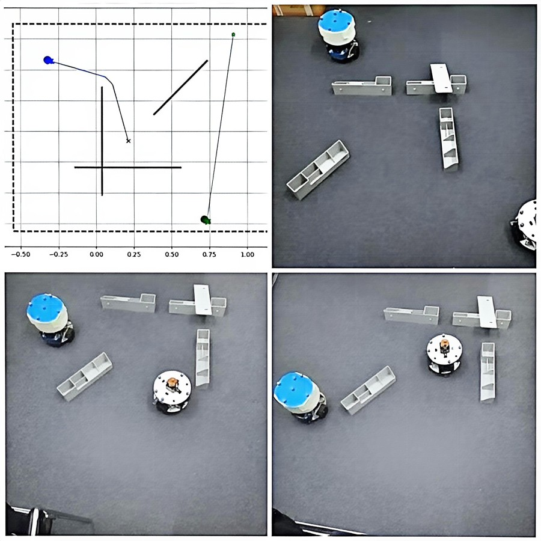

I’m an undergraduate in Biomedical Engineering at Shanghai Jiao Tong University, with an interest in embodied intelligence for medical robotics.
我是房骁喆，上海交通大学生物医学工程本科生，关注具身智能医疗机器人，目前正在探索手术机器人磁导航。
I began studying clinical medicine at Shanghai Jiao Tong University in 2025. After one year, I transferred to biomedical engineering at the same university. Today, I’m exploring magnetic navigation for surgical robots, alongside research in multi-robot planning and coordination.
I’m originally from Luohe, Henan, and now study in Shanghai. I welcome opportunities to join research groups, collaborate on robotics projects, and learn from people working across medicine and engineering.
Our paper on LLM-guided cooperative navigation has been accepted and presented at CAC 2026. Read more ↗
Research & projects
01 / SELECTED WORK
01
CAC 2026 · ACCEPTED · EQUAL FIRST AUTHOR
LLM-Guided Cooperative Navigation with Dual-Rate Reactive Control
A multi-robot navigation framework that combines LLM-guided negotiation with fast reactive control. I designed and tested the physical robot platform for static obstacle avoidance, and conducted simulations of dynamic obstacle avoidance and inter-robot coordination.
CAC 2026Accepted · Poster presented · Equal first author
Xiaozhe Fang†, Kenan Zhang†, Mingzhe Yang, Yi Guo, Peng Wang
† Equal contribution · Chinese Automation Congress, 2026

Physical multi-robot experiment
How can robots coordinate at a narrow passage while an LLM is still reasoning? Our framework separates slower semantic coordination from faster reactive motion control.
It combines LLM-guided negotiation with RRT*, DWA, and Discrete Radial Sampling, and evaluates the approach in simulation and on a physical multi-robot platform.
MY HANDS-ON CONTRIBUTION
I independently designed the mobile robots, set up the motion-capture system, and carried out the full physical-robot debugging and experimental workflow for static-obstacle validation. I also conducted simulation studies of dynamic obstacle avoidance and inter-robot negotiation, evaluating how robots coordinate their motion and resolve conflicts in shared spaces.
01Robot designPhysical mobile platform
02Motion captureExperimental setup
03On-robot testingDebugging & validation
RESEARCH DEMONSTRATION · 0:39From the planner to the physical robotsPhysical robot motion alongside the planning visualization. This experiment validates navigation with static obstacles; it does not demonstrate physical dynamic-obstacle avoidance.Download video ↓
The manuscript reports a 96.8% navigation success rate in the full-framework ablation experiment. Physical validation achieved 19 successful trials out of 20, with a mean path-tracking error of 0.042 m.
Physical experiments were limited to static obstacle configurations; dynamic-obstacle validation on the physical platform remains future work.
I presented our work on LLM-guided cooperative navigation at the 2026 China Automation Congress. The poster brings together the planning framework, experimental results, and physical robot validation.
02
CURRENT RESEARCH
Magnetic navigation for surgical robotics
My current research direction explores magnetic navigation in surgical robotics, connecting my clinical-medicine background with biomedical engineering and embodied intelligence.
Medical robotics / Magnetic navigation / Embodied intelligence
03
ENGINEERING PROJECT · 2026
Intelligent logistics robot
A mobile manipulation project combining route execution, QR-based task input, positioning, motor control, and a servo-driven arm for material handling. The project includes a Teensy-based controller and simulation tools for inspecting robot behavior.
Embedded control / Mobile manipulation / Programming
Exhibitions & field notes
02 / OUTSIDE THE LAB
Exploring how medical technology, robotics, and AI are being put into practice at CMEF and WAIC.
EXHIBITION VISIT · 2026
CMEF · Medical technology up close
Visitor notes
Scenes from my visit to CMEF: surgical robotics, ultrasound, and medical imaging equipment. These are technologies I encountered at the exhibition.
A mobile robot demonstration at WAIC. Exhibition footage; not my own research platform.
Background
03 / LEARNING & BUILDING
Education
2026 — PRESENT
Shanghai Jiao Tong University
Undergraduate, Biomedical Engineering
2025 — 2026
Shanghai Jiao Tong University
Undergraduate studies in Clinical Medicine Transferred to Biomedical Engineering after one year.
Honors
✦
Meritorious Winner
Mathematical Contest in Modeling (MCM) 2026
✦
First Prize · University Round
National Undergraduate Engineering Practice & Innovation Competition
Hands-on skills Programming & electrical control
Beyond the lab
04 / A LITTLE MORE
Outside my studies, I enjoy playing the violin and basketball. I’m always happy to meet new people, whether through research, music, or a game on the court.
LET’S CONNECT
Good work starts with a conversation.
For research opportunities, robotics collaborations, or simply to say hello.